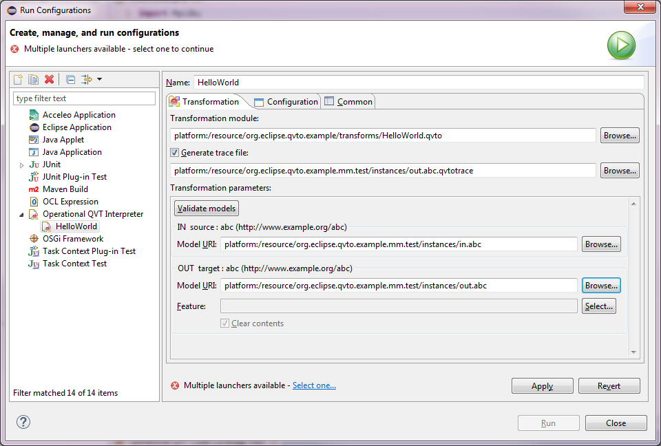
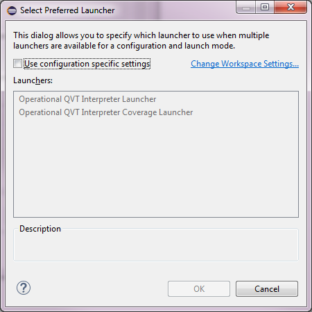
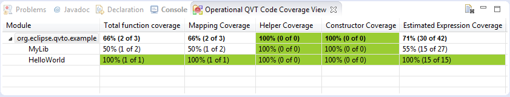

The Code Coverage Tool provides an extended Operational QVT launch configuration delegate which is able to collect code coverage data from the transformation that is configured to be executed in the launch configuration. An example is shown in the figure below:

The transformation can only be executed once one of the available launchers are selected. Click the link Select one... in order to select the preferred launcher using the dialog as shown below:
Either select the desired launcher for all transformations by changing the workspace settings, or select one for the current transformation using the configuration specific settings. The launcher contributed by the Code Coverage tool is the Operational QVT Interpreter Coverage Launcher. In case this launcher is selected, the transformation is instrumented with coverage data.
After successful execution of the transformation using the Operational QVT Interpreter Coverage Launcher, the Operational QVT Code Coverage View is instantiated and given focus, in order to directly present the coverage data. An example is shown below:
